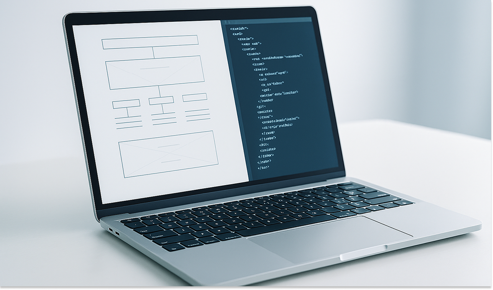

E&T
株式会社
イーアンドティー
イーアンドティー
TRASFER OF
EXECUTIVE PLAN
& EXTRA
TECHNOLOGY
これからのITによる経営改革を推進するには、意見を素直に吸収
し、仕事に責任を持ち、自ら積極的に行動できる人間力豊かな
人材が不可欠であると考えます。
我々イーアンドティーでは、このような人材を育成し、
結束することを最大の武器とし、企業の改革を支えていきます。
し、仕事に責任を持ち、自ら積極的に行動できる人間力豊かな
人材が不可欠であると考えます。
我々イーアンドティーでは、このような人材を育成し、
結束することを最大の武器とし、企業の改革を支えていきます。
Company profile
Corporate philosophy
Company Profile
Business
Major Clients
Business Overview

Recruit information
新卒採用
「和衷協力と「成長の創造」を理念とし、
創業30年以上の安定した経営基盤と
家族的な企業文化の中自らの成長と創造を図り、
社会への貢献を目指す独立系のシステム開発企業です。
創業30年以上の安定した経営基盤と
家族的な企業文化の中自らの成長と創造を図り、
社会への貢献を目指す独立系のシステム開発企業です。
中途採用
弊社では、業務を応援してくださる方を募集しております。
案件によって業務内容は異なり
ますが、様々な案件を取り扱って
おりますので、ご希望に沿った
案件をご紹介させていただきます。
Employee Interviews